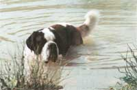
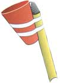
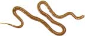

Be a Bee: Make 'Honey '
A friend of mine, here in Alaska, makes his own honey substitute. Here is the recipe:
10 cups sugar
1 teaspoon alum
3 cups water
2 cups fireweed blossoms
1 cup red clover blossoms
2 1/2 cups white clover blossoms
Boil the water, sugar and alum for 10 minutes. Remove from heat. Rinse blossoms in strainer and drain well. Be sure not to leave any green parts on blossoms or honey will be grassy tasting. Stir in blossoms and steep for three hours. Remove flowers; strain through cheesecloth if necessary. Reheat to a boil, then pour into jars and seal. Makes about seven 8-ounce jars.
MARGIE BUCHWALTER
Bethel, Alaska
I enjoyed your recent article on simple solar heating. I've been designing sun-tempered and passive-solar houses in the sun-starved Pacific Northwest for more than 20 years. It still amazes me how many people build a new house without ever thinking about the light that falls on it. Not only must they live much of the year in the dark, they are spending perhaps 20 percent to 30 percent more than they need to for heating.
Your readers planning to build solar homes might want to check out my do-it-yourself, downloadable Sunkit that will plot the sun for any building site in the mainland 48 states. This Sunkit includes the most effective and simplest solar strategies and also tells how to adjust them to fit local climate variables.
The Sunkit can be found at countryplans.com/solarkit.htm .
JOHN RAABE
Langley, Washington
This was our first year on our little 10-acre plot of land. We have had such a wonderful time together fixing up and planting our first garden, and raising rabbits and fowl for our table. Since the summer here is so hot, it isn't practical to keep the rabbits through it. Therefore, last spring my husband spent several days butchering our winter rabbits. Most people put their butchered rabbits into the freezer. We have done this, too. But this time we decided to can our rabbits. You cannot imagine how wonderful they taste until you have had them canned. Here's our sure-fire recipe for canning domestic rabbit.
Canned Rabbit
Clean and cut the rabbit into serving-size pieces. Pack tightly into wide-mouth canning jars.
Add to each jar:
1 tablespoon McCormick's original chicken seasoning
1 tablespoon onion-garlic wine or any dry white wine (We make our own onion-garlic wine, so you won't be able to find it on supermarket shelves.)
Place into pressure canner and process according to manufacturer's instructions. Be sure to follow all instructions for canning very carefully.
This recipe also works for chicken and pork, and we used it to put up 100 pounds of chicken and 100 pounds of pork. Now, when we want to eat in a hurry, we reach into the pantry and have our meal on the table in less than 10 minutes. Our friends are just amazed at the wonderful taste that canning imparts to the meat. As for the rabbit skins, we are tanning the hides to make decorator rugs for our home, using the recipe from another issue of MOTHER.
RUSS & SHARON SILLJER
Haskell, Oklahoma
When killing broadleaf weeds, regular white vinegar, at 5 percent acidity, works well. Be careful when handling and spraying not to get any of the vinegar in your eyes. Some people experience skin irritation with vinegar too.
The best time to spray is on a windless day, early in the morning - make sure that a hot, sunny day is forecast. I like to use my pressure sprayer with plain vinegar. To spray, cover the leaves of the weed thoroughly and spray the crown of the plant. In about an hour, the leaves should be drooping. By the end of the day the weed leaves will be all shriveled up.
Vinegar doesn't necessarily kill the root of the weed, so reapplication may be necessary. The younger the weed, the easier it will be to kill. For me, vinegar has knocked out Canada thistle, dandelion, plantain and burdock.
JUDY DEPEAL
Walbridge, Ohio
Please reprint this "recipe" for catching fruit flies. I first read this in an early issue of Mother Earth News and have told dozens of people, but every year I have to tell more people:
Put about an inch of cider vinegar into a small container, add two or three drops of liquid dishwashing detergent, stir it up and set it near the source of the fruit flies.
It works!
MRS. QUINTIN HADLEY
Cassadaga, New York
As our little backyard peach tree grew larger, it became more and more difficult to reach the ripe fruit on the higher limbs. At first, a stepladder sufficed to get us high enough, but soon an aluminum extension ladder was required for the higher fruit picking.
This year, rather than risk a fall from a ladder, I asked my wife to give me one of her stiff plastic drink cups. From my window-washing supplies, I selected one of the 6-foot telescoping poles. With a few turns of tape, I fastened the plastic cup to the end of the pole.
Safely standing on the ground, I can extend the pole a considerable distance. By placing the lip of the cup under the stem of the fruit, a simple push upward breaks the fruit free. It drops gently into the cup without bruising. There is enough room in the cup for two peaches.
ARTHUR LEE
Santa Cruz, California
I have a very inexpensive way to ward off deer from eating my flower garden: I've set a few 2- to 3-foot-long rubber snakes
around the flower garden. It has worked great for me so far! Seems worth a try for anyone trying to keep their flowers from being devoured. Guess the creatures are a bit intimidated by the presence of snakes (even if they aren't real)!
Make sure you tell your family and friends that the rubber snakes are there. Otherwise they may be in for a startle themselves!
KIM SIMCHAK
Madison Township, Pennsylvania
Please share your wise-living tipswith our readers. We'll pay $25to $50 for each letter we publish.Send info, with photos if possible,to Country Lore at MOTHEREARTH NEWS; 1503 SW 42ndSt.; Topeka, KS 66609-1265 orto letters@motherearthnews.com .- MOTHER
|
Matthew stallbaumer Peach Picker |
 snakes |
 |
|
 |
|
|